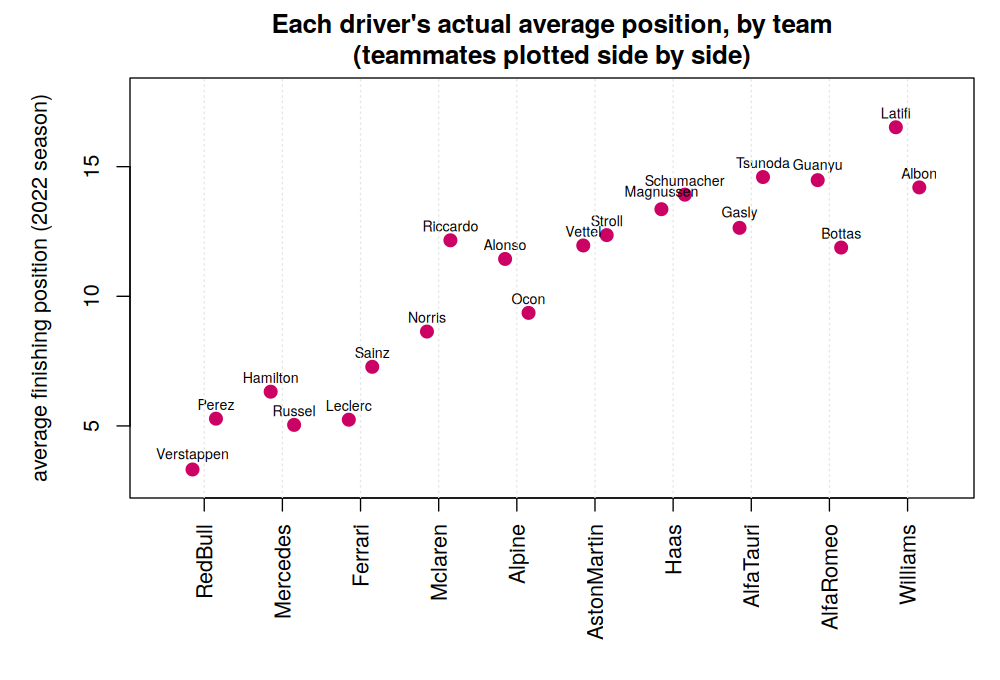
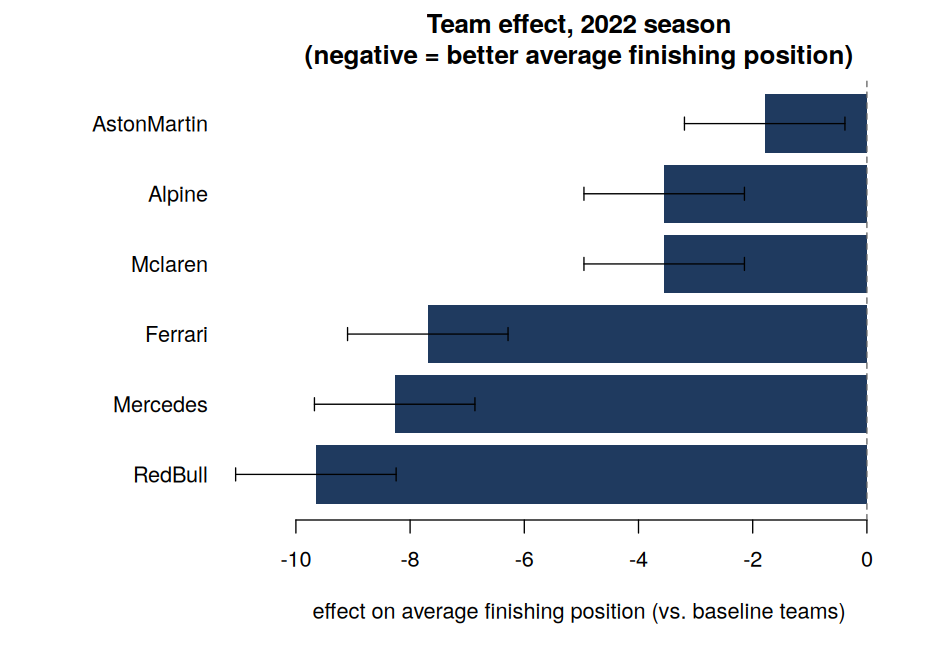
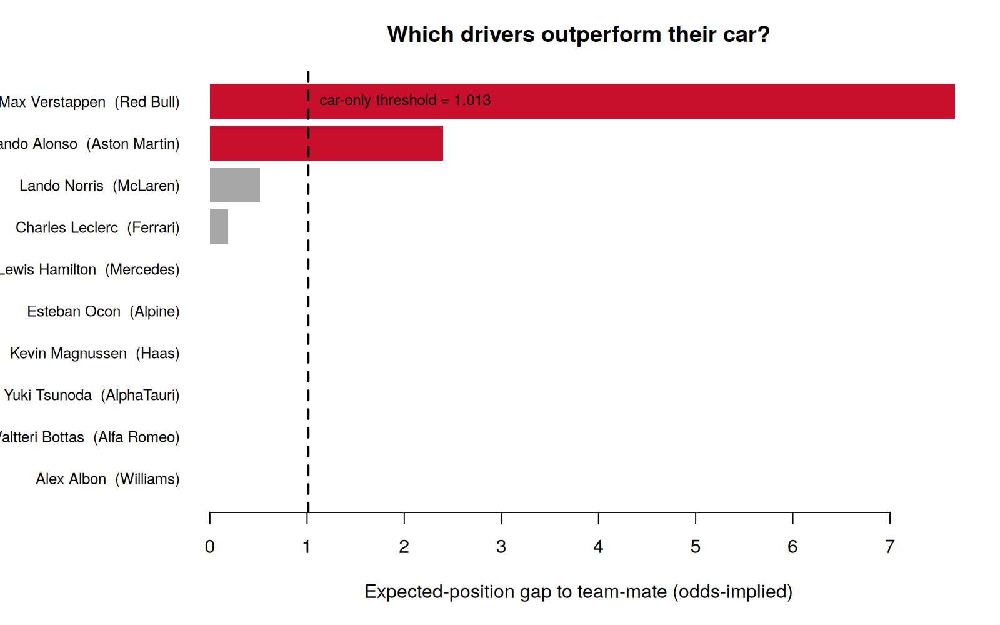

Who’s actually the best F1 driver?
Separating driver performance from car advantage with time–rank duality
Statistical modelling
Who’s actually the best F1 driver?
Companion code and technical walkthrough for our joint paper on separating driver performance from car advantage with time–rank duality.
How much of a race result comes from the driver, and how much from the car?
Connect a tractable race-time model to observable finishing ranks, then use separate datasets to benchmark constructor effects and compare drivers with their cars.
Constructor quality is the dominant source of variation; the driver comparison then identifies expected performances that beat the benchmark implied by the car.
This project presents joint work with John Fry and Tom Brighton. I am a co-author of the paper and developed this website account around a checked, reproducible implementation of the published analysis.
The headline result: the analysis learns a conservative teammate-gap threshold from the 2022 season, then applies it to expected positions inferred from the 2023 Qatar Grand Prix odds. Max Verstappen and Fernando Alonso are the only drivers whose within-team gaps exceed that threshold.
The problem
When Max Verstappen wins a race, how much of that is Max — and how much is the Red Bull?
This is a hard identification problem. Driver and car are tightly confounded because a driver only competes in their own team’s machinery. Earlier econometric studies often pool many seasons and exploit drivers changing teams. That is valuable historically, but it is less helpful when the question is: who is outperforming their car now?
Our paper shows how to reach an informative comparison using one season of public race results and the betting odds for one later race. The key is a bridge between two ways of modelling the same race.
Two models, one bridge
The time model. Treat each car’s finishing time as exponentially distributed, \(T_i \sim \mathrm{Exp}(\lambda_i)\). Larger \(\lambda_i\) means a faster latent race time. The resulting win probability is exactly
\[ \Pr(\text{car }j\text{ wins})= \frac{\lambda_j}{\lambda_1+\cdots+\lambda_n}. \]
This is mathematically clean and easy to calibrate to bookmaker probabilities, but complete finishing times are usually unavailable because lapped cars do not cover the full race distance.
The rank model. Finishing positions are public, so model each rank as Gaussian, \(r_i\sim N(\mu_i,\sigma^2)\). The model again gives a closed-form win probability.
Time–rank duality. Equating the two win probabilities translates the bookmaker information from the time model into expected finishing positions in the rank model. The analysis gets the tractability of the first model and the observability of the second.
How the analysis works
This is the modelling pipeline, not page navigation. The first two stages translate market information into expected ranks; the final two learn and apply a historical benchmark.
Two datasets have different jobs. The 2022 results estimate the historical benchmark. The 2023 Qatar odds produce the expected ranks to which that benchmark is applied. Keeping those stages separate is essential.
First look: cars dominate the raw results
The first picture is deliberately descriptive. Each point is a driver’s average finishing position over the 25 recorded races and sprints in 2022, with teammates placed side by side.

The large jumps between constructors show immediately why car quality cannot be ignored. Red Bull, Mercedes and Ferrari occupy a very different part of the plot from the back of the grid. The smaller gaps within each constructor suggest an additional driver-level effect — but these raw averages are not the final comparison.
Estimate the car effect rather than eyeballing it
The regression uses all 500 driver-race observations. It explains finishing position using constructor indicators while retaining a second-driver indicator. The constructor coefficients below are relative to the omitted baseline teams; negative values mean a better expected finishing position.

The ordering matches the intuitive picture, but the model makes the comparison explicit. Red Bull has the largest estimated advantage, followed by Mercedes and Ferrari. The estimated second-driver penalty is only \(0.216\) positions and is statistically uncertain; its 95% confidence interval is \((-0.581,\ 1.013)\).
The upper endpoint, 1.013 positions, becomes a conservative benchmark. A later within-team expected-rank gap above this value is larger than the historical car-and-teammate pattern can comfortably explain.
Apply the benchmark to the 2023 Qatar odds
Bookmaker odds for the Qatar Grand Prix are converted into implied win probabilities, adjusted for the bookmaker margin, and translated through the duality into expected finishing ranks. The analysis then compares the two expected ranks within each constructor.

Two drivers — and only two — clear the threshold:
- Max Verstappen versus Sergio Perez: an expected-position gap of about 7.669;
- Fernando Alonso versus Lance Stroll: an expected-position gap of about 2.403.
The remaining within-team gaps are below 1.013. In the language of the model, Verstappen and Alonso are the two drivers whose market-implied advantage over their teammates is too large to attribute to the car-only benchmark learned from 2022.
What this does not say: the raw 2022 teammate averages are not tested against the threshold. They are useful context, while the final comparison uses the 2023 odds-implied expected ranks. The technical walkthrough documents the distinction and reproduces the relevant tables and checks.
From a paper to a reproducible analysis
The implementation is part of the project, not an afterthought. The updated repository contains:
- two explicit input datasets rather than hidden or hard-coded values;
- small base-R modules for odds calibration, rank duality, regression and driver effects;
- a one-command script reproducing Tables 1–3 and the final comparison;
- tests against the paper’s published values;
- four figures generated directly in R, with the exact plotting code shown beside the explanation.
This separation matters in applied work: the descriptive plot, the fitted model and the final decision rule each answer a different question, and the code keeps those stages auditable.
Responsible interpretation
“Outperforming the car” is a model-based statement, not a direct measurement of immutable driver ability. It combines a threshold estimated from 2022 with information embedded in one race’s 2023 betting market. The conclusion depends on assumptions including independent exponential race times, a Gaussian rank approximation, common rank variance and the information contained in bookmaker odds.
The strength of the project is not that those assumptions are invisible; it is that the full chain from data to claim is explicit, reproducible and open to scrutiny.
Why I like this project
- Tractability becomes useful information. Choosing models with exact win probabilities makes the time–rank bridge possible.
- Constraints reduce the data burden. The fact that ranks always sum to \(n(n+1)/2\) identifies a parameter that would otherwise need estimating.
- A sharp question beats brute force. Careful structure extracts a current-season comparison from far less historical data than a large pooled model.
The method extends beyond motorsport to any setting where you observe rankings but reason about latent performance — horse racing, esports, even recruitment funnels.
Citation and licence
If the paper or companion code is useful in your work, please cite the published article [1]. The maintained code is available at sfanzon/F1-Paper-Code [2]. Code and data are released under CC BY-NC 4.0.
@article{2024-Fry-Bri-Fan,
author = {Fry, John and Brighton, Tom and Fanzon, Silvio},
title = {Faster identification of faster Formula 1 drivers via time-rank duality},
journal = {Economics Letters},
volume = {237},
pages = {111671},
year = {2024},
doi = {10.1016/j.econlet.2024.111671}
}